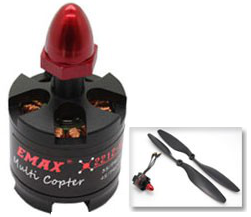

Motor Brushless A2212/15\(T\)-930\(KV\)
El motor empleado sera un motor sin escobillas outrunner genérico link.

Características
- Celdas: 3S
- Peso de arrastre Max: 830 \(g\)
- kv: 920 \(kv\)
- Diámetro eje: 3 \(mm\)
- Diámetro: 27.60 \(mm\) (1.09 \(in\) )
- Largo: 26.70 \(mm\) (1.05 \(in\) )
- Maximum Amps: 12
- Rm: 0.388
- Io: 0.55
Controlador del motor (ESC)
Para controlar los motores, se utilizó el "EMAX Multirotor 4IN1 ESC(4*25A)".
Características
- Maxima corriente contínua: 25\(A\)*4
- Corriente "Burst": 30\(A\)*4
- Tipo BEC: Switch mode
- Salida BEC: 5\(V\)/3\(A\)
- Bateria Li-xx (celda): 2-4
- Dimensión: 67.5*64.4*17 \(mm\)
- Peso: 130 \(g\)
- Programable: Sí
Calibración de motores, con arduino
Cuando los motores no están calibrados, o en caso de que se deseé cambiar la calibración de los motores, una opción es calibrarlos utilizando el controlador. El controlador.
Para calibrar el motor, se utilizan dos señales, una que dura 1ms en alto, y la otra que dura 2 ms en alto. En la puerta de comunicacion utilizada por el arduino ¨CM¨ hay que mandar el valor 2000, para indicar que se desea configurar. Luego se enciende el ESC.
En la tabla 1 se muestra el menú principal, configuraciones y como se escucharán (identificador). Para seleccionar alguna de las configuraciones, es solo enviar a la puerta de comunicación el valor 1000 (corresponde a 1ms de la figura abajo) após escuhar los ¨beeps¨ correspondiente

En las tablas seguientes (2,3,4,5,6,7 y 8), muestan las opciones de los submenús, donde aparecen las opciónes de las configuraciones del menú principal. Para seleccionar alguna de las opciones, es solo enviar a la puerta de comunicación el valor 2000 (corresponde a 2ms de la figura abajo) após escuhar los ¨beeps¨ correspondiente

La configuración que utilizamos para este proyecto, es utilizar todos las opciones de configuración en su valor por defecto (defaut) menos la opción 4 "Curve Mode" la cual, elegimos la opción 2, para suavisar los cambios de potencia.
Tabla 1: Menú principal (1ms).
| # | Identificador | Función |
|---|
| 1 | 1 beep corto | Brake Type |
| 2 | 2 beeps cortos | Timing Mode |
| 3 | 3 beeps cortos | Start Force |
| 4 | 4 beeps cortos | Curve Mode |
| 5 | 1 beep largo | Control frecuence |
| 6 | 1 beep largo + 1 beep corto | Low voltage |
| 7 | 1 beep largo + 2 beeps cortos | Cutoff mode |
Tabla 2: Brake Type (2ms).
| # | Identificador | Opción |
|---|
| 1 | 1 beep corto | OFF (defaut) |
| 2 | 2 beeps cortos | Low |
| 3 | 3 beeps cortos | Mid-Low |
| 4 | 4 beeps cortos | Middle |
| 5 | 1 beep largo | Mid-High |
| 6 | 1 beep largo + 1 beep corto | High |
Tabla 3: Timing Mode (2ms).
| # | Identificador | Opción |
|---|
| 1 | 1 beep corto | 0° |
| 2 | 2 beeps cortos | 8° |
| 3 | 3 beeps cortos | 15° (defaut) |
| 4 | 4 beeps cortos | 23° |
| 5 | 1 beep largo | 30° |
Tabla 4: Start Force (2ms).
| # | Identificador | Opción |
|---|
| 1 | 1 beep corto | 0.03 |
| 2 | 2 beeps cortos | 0.05 |
| 3 | 3 beeps cortos | 0.06 |
| 4 | 4 beeps cortos | 0.09 |
| 5 | 1 beep largo | 0.13 |
| 6 | 1 beep largo + 1 beep corto | 0.19 |
| 7 | 1 beep largo + 2 beeps cortos | 0.25 |
| 8 | 1 beep largo + 3 beeps cortos | 0.38 |
| 9 | 1 beep largo + 4 beeps cortos | 0.50 |
| 10 | 2 beeps largos | 0.75 (defaut) |
| 11 | 2 beeps largos + 1 beep corto | 1.00 |
| 12 | 2 beeps largos + 2 beeps cortos | 1.25 |
| 13 | 2 beeps largos + 3 beeps cortos | 1.50 |
Tabla 5: Curve (2ms).
| # | Identificador | Opción |
|---|
| 1 | 1 beep corto | OFF (defaut) |
| 2 | 2 beeps cortos | Low |
| 3 | 3 beeps cortos | Middle |
| 4 | 4 beeps cortos | High |
Tabla 6: Control frecuence (2ms).
| # | Identificador | Opción |
|---|
| 1 | 1 beep corto | 8KHz (defaut) |
| 2 | 2 beeps cortos | 22KHz |
Tabla 7: Low voltage (2ms).
| # | Identificador | Opción |
|---|
| 1 | 1 beep corto | 2.8V/cell |
| 2 | 2 beeps cortos | 3.0V/cell (defaut) |
| 3 | 3 beeps cortos | 3.2V/cell |
| 4 | 4 beeps cortos | Off |
Tabla 8: Cutoff mode (2ms).
| # | Identificador | Opción |
|---|
| 1 | 1 beep corto | Soft-Cut (defaut) |
| 2 | 2 beeps cortos | Cut-Off |